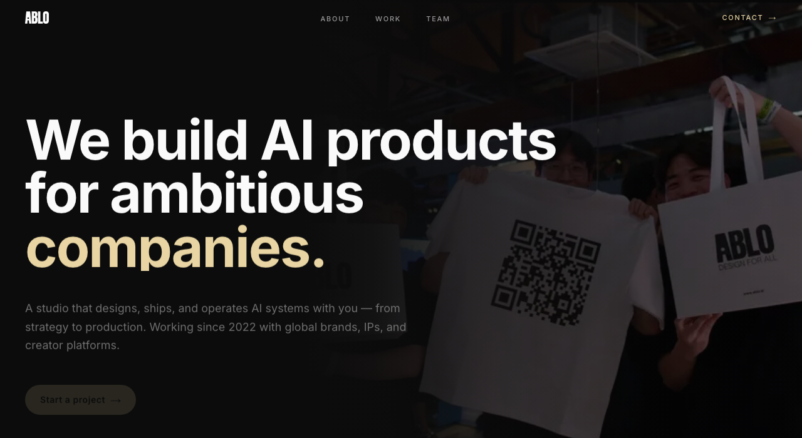

| What it does | Lets creators design and sell fashion items using licensed brand IP; auto-distributes royalties when designs are sold or remixed |
| Founded | 2021 — New York, NY |
| Funding | $10M seed · Accel, Polychain, Pantera, Jump Crypto |
| Creators | 3,000+ beta users |
| GMV | Unknown |
| Revenue | Undisclosed — growth stage |
| Revenue growth | Unknown |
| Brands | Adidas, Balmain, Crocs, Champion, Ralph Lauren, Smiley, Pangaia |
| Model | Monthly subscription + commission on creator sales |
| Commissions | Basic plan 10% · Premium plan 8% — charged on creator sales in addition to subscription fee (source: Perplexity PDF §7) |
| Geography | US (NY/SF) — global brand partners |

| What it does | Affiliate commerce platform connecting fashion influencers to brands and shoppers via shoppable links; takes commission on each sale |
| Founded | 2011 — Dallas, TX |
| Funding | ~$315M total raised · $2B valuation (SoftBank led $300M round, 2021) |
| Influencers | 150,000+ |
| GMV | $3B+ annually |
| Revenue | Undisclosed |
| Revenue growth | Mature — stable |
| Brands | 5,000+ (mass market + premium) |
| Model | Affiliate commissions + brand SaaS fees + managed campaign fees |
| Commissions | Fashion 5–15% · Beauty 5–15% (brand-set rates within range — source: Perplexity PDF §9) |
| Geography | 100+ countries · EU hubs: UK, Germany |

| What it does | Influencer commerce platform — shoppable storefronts, brand campaign tools, and full attribution showing exactly which influencer drove each sale |
| Founded | 2020 — New York, NY |
| Funding | ~$147.5M total raised · $1.5B valuation (Bessemer, Bain Capital Ventures, Avenir, Menlo) |
| Influencers | 185,000+ curated tastemakers |
| GMV | $1B+ annually |
| Revenue | ~$80M (2025 est. Sacra) · profitable since 2024 |
| Revenue growth | ~200% YoY (2025, Sacra) |
| Brands | 1,200+ premium (Rhode, Net-a-Porter, Gucci) |
| Model | Affiliate commissions + brand SaaS (Lookbooks, Opportunities tools) |
| Commissions | Fashion 8–20% · Beauty 15–25% — higher than LTK across every category (source: Perplexity PDF §9) |
| Geography | US-first · UK expansion 2025 |
W&B ($95M GMV, profitable) and NOTHS (~$110M revenue) prove the independent designer market is real in Europe — but both are pure marketplaces. Designer produces, consumer buys. EU consumers buying from US-based platforms (LTK, ShopMy) pay import VAT and customs duties on delivery — EU designer to EU consumer avoids this entirely.
| What it does | Curated marketplace for 2,000+ independent designers — fashion (83%), jewellery, beauty, homeware — no inventory held; brands self-manage listings |
| Founded | 2010 — London, UK (founders: George & Henry Graham) |
| Funding | ~£4.5M Series A (2019, Guinness Asset Management); ~$20M total per media; B Corp certified |
| Creators | 2,000+ independent designer brands; ~300 applications per month |
| GMV | ~$95M (2024) |
| Revenue | ~$50M (2024) — second consecutive profitable year |
| Revenue growth | US grew from $3M (2019) to $45M+ (2024); US now ~50% of total sales |
| Brands | N/A — designers are the product (no separate brand client tier) |
| Model | Monthly designer subscription + undisclosed % commission per sale; stores in London, NYC, LA |
| Commissions | Not publicly disclosed — set individually per brand in seller dashboard. Subscription: $375/month per brand (source: Modern Retail, W&B seller terms) |
| Geography | London HQ · NYC (SoHo, since 2017) · LA (West Hollywood, since 2022) — US ~50% of sales |
| What it does | Curated UK marketplace for independent small businesses — every product must be designed or hand-finished by the seller; covers fashion, gifts, home, food. Zero inventory held by the platform. |
| Founded | 2006 — London, UK; founders Holly Tucker and Sophie Cornish |
| Funding | ~$77.7M total raised (source: Crunchbase) |
| Creators | 5,000+ independent seller businesses; 350,000+ products; 4M+ customers |
| GMV | Not separately disclosed |
| Revenue | ~$110M (2024, secondary source — Mintsoft; not confirmed from primary filing) |
| Revenue growth | Not publicly disclosed |
| Brands | N/A — sellers are the independent makers; no separate brand client tier |
| Model | Annual joining fee + commission per sale; asset-light, no platform inventory |
| Commissions | 25% per sale + £199/year joining fee (source: NOTHS seller terms via Mintsoft) |
| Geography | UK-primarily · Growing online presence; no significant US expansion confirmed |
Terra Ferra needs in-platform discovery so designers can find the right influencers, the right fans and the right consumers. This catalog covers real, functioning, verified tools across three categories. A — AI APIs Terra Ferra integrates into its own product (the route to making TF itself a discovery platform). B — SaaS Terra Ferra subscribes to from the brand side to find creators. C — tools to find and segment paying consumers and fans. Every card cites the source URLs the facts come from.
Ratings are this document's assessment for Terra Ferra's specific use case, not vendor-given.
-
Syte RecVisual similarityPattern/colour/silhouetteAttribute extractionPersonalisation
-
FashionCLIP RecZero-shot classificationCross-modal retrievalText-attribute matchingFree / MITSelf-hosted
-
Lily AI RecAttribute extractionConsumer-language taggingTrend/occasion matching
| Pricing | Not publicly disclosed |
| Integration | API + SaaS, e-commerce platform integrations |
| Free trial | Not mentioned |
| Fashion clients | Farfetch, PrettyLittleThing, SHEIN, Signet UK, Falabella |
| Geography | Global |
| Pricing | Not disclosed — 30-day free trial advertised |
| Integration | API + SDK + e-commerce connectors |
| Free trial | Yes — 30 days |
| Fashion clients | Zalora, Myntra, ShowPo, Urban Outfitters, Mango, Target, Tod's, EyeBuyDirect |
| Geography | Global (APAC origin) |
| Pricing | Free (MIT license) |
| Integration | Self-hosted via Hugging Face; pip install fashion-clip |
| Free trial | Free forever |
| Clients | N/A — open-source model |
| Geography | Self-hosted |
| Pricing | Not publicly disclosed |
| Integration | SaaS + API, bi-directional with sales/marketing channels |
| Free trial | Not mentioned |
| Fashion clients | Bloomingdale's, Rue Gilt Groupe |
| Geography | Global |
| Pricing | Free starter tier + enterprise on demo |
| Integration | API + pre-built widgets + CMS / catalog connectors |
| Free trial | Free starter |
| Fashion clients | END. Clothing, Gymshark |
| Geography | Global |
| Pricing | Not disclosed |
| Integration | SaaS dashboard; API references in product content |
| Free trial | Not mentioned |
| Fashion clients | Amazon, H&M, Tommy Hilfiger, Fossil, Celio, Bestseller Group, Forever 21, Bata, ASOS, Snapdeal |
| Geography | Global (India origin) |
| Pricing | Not disclosed |
| Integration | SaaS or API |
| Free trial | Not disclosed |
| Fashion clients | "Leading global fashion and luxury brands" — none named on homepage |
| Geography | EU origin, global |
| Pricing | Pay-per-hour for training and inference — see aws.amazon.com/rekognition/pricing for current rates |
| Integration | AWS API |
| Free trial | AWS Free Tier applies (terms vary) |
| Clients | Horizontal cloud service — not fashion-specific |
| Geography | Global (AWS regions) |
| Pricing | Not publicly disclosed |
| Integration | Platform / SaaS |
| Free trial | Not mentioned |
| Fashion clients | Lane Crawford (per PR Newswire 2023) |
| Geography | Global |
| Pricing | Serverless pay-as-you-go + dedicated GPU + enterprise custom |
| Integration | Cloud API |
| Free trial | Sign-up referenced; specifics not on homepage |
| Key clients | OpenTable, Canva, Vimeo, Amazon, Siemens, NVIDIA — general, not fashion |
| Geography | Global |
| Pricing | Consumer-facing free; B2B API availability not confirmed |
| Integration | Primarily a marketplace + visual search — B2B integration not standard |
| Free trial | N/A |
| Clients | N/A — consumer marketplace |
| Geography | 13 EU markets |
| Pricing | GCP rates — see pricing page |
| Integration | Google Cloud API |
| Free trial | GCP free tier |
| Status | In maintenance mode — Google recommends Vision Warehouse |
| Geography | Global (GCP regions) |
-
Modash RecSmart filtersVisual aestheticImage uploadNatural languageDemographicsEngagementOutreach CRMCampaign tracking
-
Archive RecSmart filtersContent captureUGC libraryVisual searchImage uploadNatural languageCreator CRMInstagramTikTok
-
Lefty RecSmart filtersCRMContent captureAffiliateSales tracking
-
Upfluence RecDemographicGeographicEngagementLookalike-from-customersAI co-pilot
-
Heepsy RecGeographicCategoryDemographicEngagementLookalikeAuthenticity
-
LocationCategoryViews/followersReachNicheDemographicEngagementFree
-
NicheFollowersGenderAgeLocationInterestsDemographicFree
-
Grin RecAI creator matchingNicheAudienceEngagementAffiliateAutomated paymentsContent libraryCRM
-
Brandbassador RecAmbassador mgmtMissionsUGCRewards
-
SocialLadder RecAmbassador mgmtMobile communityAI content reviewRewards
-
Roster RecAmbassador mgmtAffiliateUGC captureSales attributionProduct seeding
-
Shopify Collabs RecAffiliateCreator app pageGiftingAuto-trackingShopify-nativeFree
-
Refersion RecAffiliatePayoutsTrackingMarketplace
Visual-first discovery — search by image or aesthetic
| What it does | Influencer discovery and analytics platform — find influencers by audience demographics, engagement rate, or visual aesthetic; manage outreach and track campaign performance |
| Visual aesthetic search | Yes — upload any reference image to find influencers whose content matches that visual style; also accepts natural-language descriptions (e.g. "minimalist beige outfits outdoors"). Available on all plans. (source: modash.io/features/influencer-discovery) |
| Pricing | $199/mo (Essentials) · $499/mo (Performance) · Enterprise ~$14,700/yr (source: modash.io/pricing) |
| Influencers indexed | Not publicly disclosed |
| Key fashion clients | Not specifically named — general platform with documented fashion brand usage |
| Model | SaaS subscription — discovery, audience analytics, outreach, campaign tracking |
| Cost to TF | $199/mo Essentials · 14-day free trial, no credit card required (source: modash.io/pricing) |
| Geography | Estonia HQ · Global influencer database |
| What it does | Influencer content capture and discovery — automatically captures 100% of Instagram and 98% of TikTok posts from tracked influencers; AI Super Search finds new influencers by uploaded image or natural language |
| Visual aesthetic search | Yes — "AI-powered Super Search": upload a lookbook image or describe a look in plain language to surface influencers posting visually matching content. Searches across all captured post content. (source: archive.com) |
| Pricing | Pricing on request — plan names: Startup · Growth · Enterprise · Agency Standard (credit-based model, volume of UGC/mo) (source: archive.com) |
| Influencers indexed | Not publicly disclosed |
| Key fashion clients | Allbirds, Uniqlo, POPFLEX, Kitsch, Parade (source: archive.com) |
| Model | SaaS subscription with credit-based tiers; passive UGC capture runs continuously across tracked influencer accounts |
| Cost to TF | Free tier to start — zero cost while TF's ambassador roster is small; upgrade as it scales (source: archive.com/pricing) |
| Geography | US · Global influencer database |
| What it does | Influencer marketing platform with documented visual AI brand-fit matching — analyzes actual image and video content, not just hashtags or bios, to surface influencers whose posts already match a brand's visual aesthetic and values |
| Visual aesthetic search | Yes — "True AI brand-fit matching: Goes beyond keywords to understand visual aesthetics and brand values." Analyzes post content directly. Positioned as the leading alternative to GRIN specifically for visual-first discovery. (source: storyclash.com, influencermarketinghub.com) |
| Pricing | €499/mo (Starter) · €999/mo (Growth) · €1,899/mo (Scale) · Enterprise custom · Demo required (source: storyclash.com/pricing) |
| Influencers indexed | Not publicly disclosed |
| Key fashion clients | Not specifically named — general fashion/lifestyle platform |
| Model | SaaS subscription — influencer discovery, campaign management, visual content analysis |
| Cost to TF | €499/mo Starter — 2.5× the Modash entry price; demo required before access (source: storyclash.com/pricing) |
| Geography | European HQ · Global influencer database |
Other discovery SaaS — filter, lookalike, brand-fit AI
| Pricing | Not publicly disclosed |
| Integration | SaaS + e-commerce site integration for product seeding / affiliate |
| Free trial | Not mentioned |
| Fashion clients | Louis Vuitton, Celine, Ralph Lauren, Tommy Hilfiger, Guerlain, Clarins, Vans, Veja, Michael Kors, Isabel Marant, Acne Studios, Lanvin, Byredo, Puig |
| Geography | Global |
| Pricing | On request. Third-party reports (G2, PulseSignal, ITQlick): Starter ~$795/mo · Business ~$1,750/mo · Enterprise custom |
| Integration | Shopify, WooCommerce, Magento, BigCommerce, Stripe, Klaviyo, Hootsuite, Zapier, Amazon Attribution |
| Free trial | No free trial — demo only |
| Fashion clients | Lacoste, Scotch & Soda, Benefit Cosmetics, Clarins, Natasha Denona |
| Geography | Global |
| Pricing | Starter from €69/mo (500 profiles); Business and Gold tiers higher (2,000 / 5,000 profiles per month) — source: GetApp, G2, Capterra |
| Integration | SaaS dashboard |
| Free trial | Yes |
| Fashion clients | Not listed on public sources |
| Geography | Global |
| Pricing | On request. Third-party estimates (Capterra, SaaSworthy, archive.com): ~$2,000–$2,499/month with annual commitment |
| Integration | SaaS dashboard + Shopify App + Meta Ads Manager |
| Free trial | No |
| Key clients | Veradek Outdoor, Fable Home, Kettle & Fire, HexClad, Monos (homepage — none fashion-luxury) |
| Geography | Global |
| Pricing | Not publicly disclosed |
| Integration | SaaS + social platform partnerships |
| Free trial | Not mentioned |
| Fashion / beauty clients | Laneige, Sephora, L'Oréal, Pandora, Lacoste |
| Geography | 70+ countries |
| Pricing | Not publicly disclosed — demo only |
| Integration | SaaS + Shopify, WooCommerce, Tipalti, Gigapay, proprietary tracking pixel |
| Free trial | Not mentioned |
| Key clients | Canon, Western Union, Microsoft, Unilever, Mailchimp (no fashion-luxury named) |
| Geography | 190+ countries |
| Pricing | Custom plans; free trial offered on homepage |
| Integration | SaaS hub (campaign, inbox, calendar, payments) — third-party integrations not detailed |
| Free trial | Yes (duration not stated) |
| Key clients | Samsung, Kellogg's, Air France, Pernod Ricard, Havas, WPP — no fashion brands named |
| Geography | Global |
| Pricing | Via consultation |
| Integration | SaaS hybrid + full-service campaign agency option |
| Free trial | Yes (social management; influence platform unclear) |
| Key clients | Nike, Unilever, Chewy — no pure fashion-luxury named |
| Geography | Global |
| Pricing | Request proposal only |
| Integration | SaaS + agency services |
| Free trial | None (marketplace sign-up only) |
| Key clients | Disney, Amazon, Kellogg's, Walmart, Nike, Microsoft |
| Geography | Global |
| Pricing | Not publicly disclosed |
| Integration | TikTok Shop + commerce integrations |
| Free trial | Not mentioned |
| Key clients | None named on page |
| Geography | Global |
| Pricing | Not on landing page |
| Integration | Multi-platform social management (IG, FB, X, LinkedIn, TikTok, Pinterest, Threads) + Salesforce |
| Free trial | Not mentioned |
| Key clients | None named on this page |
| Geography | Global |
Native (free) — platform marketplaces
| Pricing | Free to access |
| Integration | Native to TikTok |
| Free trial | Free |
| Access | Open platform — not curated |
| Geography | Global |
| Pricing | Free for brands |
| Integration | Native to Meta (Instagram + Facebook) |
| Free trial | Free |
| Access | Open platform |
| Geography | Original 19 countries, expanding globally in 2026 |
Creator management & measurement — use after creators are found
| What it does | Influencer analytics and discovery — 226.9M+ creator database across Instagram, YouTube, TikTok, X, Twitch; find creators by keyword, niche, engagement rate, audience demographics, follower count, brand mentions |
| Visual aesthetic search | No — keyword and niche-tag search only; finds "streetwear" or "luxury" creators by how they label themselves, not by how their content looks (source: hypeauditor.com) |
| Pricing | Basic: $299/mo (billed annually) · Pro and Enterprise: on request (source: blog.hypeauditor.com) |
| Influencers indexed | 226.9M+ creators (source: hypeauditor.com) |
| Key features | 27+ filters · Audience Quality Score (fraud detection) · Lookalike discovery · Campaign reporting |
| Model | SaaS — discovery, analytics, fraud detection, campaign reporting |
| Geography | Global database · Global HQ |
| What it does | Enterprise influencer marketing platform — keyword + filter discovery, AI-powered "Improve Results" similarity matching, brand safety filtering, campaign management and measurement; 20M+ creators across Instagram, TikTok, YouTube, Facebook, Snapchat, X, Twitch |
| Visual aesthetic search | No — keyword and content-signal similarity only; AI surfaces creators similar to already-confirmed matches but does not search by visual aesthetic (source: creatoriq.com) |
| Pricing | ~$36,000/year, enterprise only, custom quotes — no monthly option, no free trial (source: Capterra, creatoriq.com pricing-request-page) |
| Influencers indexed | 20M+ creators (source: creatoriq.com) |
| Key features | Boolean keyword search · Brand safety integration · AI similarity recommendations · Multi-platform · Campaign ROI reporting |
| Model | Enterprise SaaS — annual contract, built for Fortune 500 budgets |
| Geography | US HQ · Global |
| What it does | End-to-end influencer marketing management — AI matching engine ("Gia") across 750K+ creator graph, campaign management, content library, affiliate tracking, automated payments, reporting |
| Visual aesthetic search | No — AI matching based on creator graph signals (niche, audience, engagement); finds creators by category, not by visual aesthetic (source: grin.co) |
| Pricing | $399/mo (Lite · 15 active creators) · $699/mo (Essentials) · $1,149/mo (Growth) · $1,799/mo (Complete · API access) · 30-day free trial (source: grin.co/pricing) |
| Influencers indexed | 750K+ creators in AI matching graph (source: grin.co) |
| Key features | AI creator matching · Content library · Automated payments · Affiliate attribution · Campaign reporting · CRM for creator relationships |
| Model | SaaS subscription — full lifecycle influencer management from discovery to payment; month-to-month, no contracts |
| Geography | US HQ · Global |
Affiliate, ambassador & UGC platforms — sign, pay, attribute
| Pricing | Not publicly disclosed. Four tiers (Growth · Pro · Co-Pilot · Auto-Pilot). Third-party benchmarks: $500–$3,000/mo + $1K–$5K onboarding (estimates, not vendor-published) |
| Integration | SaaS + Shopify / WooCommerce / BigCommerce / Adobe Commerce |
| Free trial | No — demo only |
| Fashion clients | NA-KD, Fabletics, Missguided, I Saw It First, IDEAL OF SWEDEN, PopSockets |
| Geography | Global |
| Pricing | Not publicly disclosed — demo only |
| Integration | SaaS + mobile community layer (branded app) |
| Free trial | Not advertised |
| Fashion / beauty clients | Lululemon, Victoria's Secret, Benefit Cosmetics, Kendra Scott |
| Geography | Global |
| Pricing | From $499/mo (third-party G2 / Capterra; vendor list price not published). Three tiers; unlimited ambassadors on all plans |
| Integration | SaaS + Shopify app |
| Free trial | Not advertised |
| Clients | Not confirmed on public homepage |
| Geography | Global |
| Pricing | FREE for merchants on any paid Shopify plan |
| Integration | Shopify-native only |
| Free trial | N/A — free |
| Fashion clients | Used broadly across Shopify ecosystem (specific brands not enumerated) |
| Geography | Global (Shopify markets) |
| Pricing | $0 Marketplace (no-cost entry) · $39/mo Launch (+3% sales) · $129/mo Growth (+2%) · $599/mo Scale (+1%, 0% transaction fee under $1M GMV) |
| Integration | SaaS + Shopify + major ecommerce platforms + API |
| Free trial | $0 Marketplace tier (no-cost entry, not a trial) |
| Fashion clients | Public case studies exist; specific fashion brands not extracted in this scan |
| Geography | Global |
| Pricing | Not publicly disclosed — demo only |
| Integration | SaaS + API |
| Free trial | Not advertised |
| Fashion clients | Levi's, Fanatics, Cabela's, Techstyle |
| Geography | Global |
| Pricing | Not publicly disclosed |
| Integration | SaaS + API |
| Free trial | Not advertised |
| Fashion clients | Nike, Uniqlo, Karen Millen, Everlane, Eberjey, Tarte, The Iconic |
| Geography | 214+ countries |
| Pricing | Awin Access entry tier: $49/mo + 3.5% tracking fee on transactions. Higher tiers: tracking fee + commission % (quote-based) |
| Integration | SaaS dashboard + tracking pixel / API |
| Free trial | No |
| Fashion clients | Adidas, Nike, Under Armour, Uniqlo |
| Geography | Global (EU origin) |
| Pricing | Not disclosed — four tiers (Starter, Pro, Premium, Ultimate), quote-based |
| Integration | SaaS dashboard |
| Free trial | Not advertised |
| Fashion / luxury clients | Uniqlo, Bulgari, The North Face, Mango, Versace, Cartier, TAG Heuer, Balenciaga |
| Geography | 200+ countries |
| Pricing | Not disclosed. Third-party reports: entry ~€1,250/mo, Business ~€3,000/mo (estimates, not vendor-published) |
| Integration | SaaS dashboard, Yotpo integration confirmed |
| Free trial | No |
| Fashion / beauty clients | Sephora, YSL, Fresh (Octoly partner network) |
| Geography | EU origin (Paris HQ), global |
| Pricing | Not publicly disclosed |
| Integration | SaaS + managed-service overlay |
| Free trial | Not advertised |
| Key clients | H&M, Sephora, IKEA, Coca-Cola, Walmart, Unilever, Paramount+, Heineken |
| Geography | Global |
| Pricing | Free for creators; brand pricing not disclosed on creator-facing page |
| Integration | SaaS (creator-side) |
| Free trial | Free for creators |
| Fashion clients | Not listed on page |
| Geography | US |
-
Klaviyo RecPredictive CLVChurn riskNext-purchaseBehaviouralLookalike syncFree tier
-
Constructor RecBehaviouralIntent inferenceNatural-language searchPersonalisationAPI-first
-
Unified profilesBehavioural audiencesReal-time orchestrationCDP backbone
| Pricing | Free plan — 250 profiles, 500 emails/mo, 150 SMS credits/mo. Paid plans scale by profile count |
| Integration | SaaS + 350+ integrations; Shopify-native; ad platform sync |
| Free trial | Free plan indefinitely under limits |
| Fashion clients | Widely used in DTC fashion (specific brand list not on pricing page) |
| Geography | Global |
| Pricing | Not publicly disclosed |
| Integration | API-first, headless, platform-agnostic; Shopify, Salesforce Commerce Cloud, BigCommerce, Commercetools, AWS |
| Free trial | Not mentioned |
| Fashion clients | Sephora, Gap, Under Armour, Foot Locker, Journeys, Rothy's |
| Geography | Global |
| Pricing | Free trial, no credit card; tiers on pricing page |
| Integration | CDP backbone; 750+ integrations across analytics, ads, email, CRM |
| Free trial | Yes |
| Fashion clients | Not named on landing page |
| Geography | Global |
| Pricing | Not disclosed |
| Integration | Firebase, Contentful, Shopify, mParticle, Tealium, SendGrid, Klaviyo, Contentsquare |
| Free trial | Not mentioned |
| Fashion clients | LUISAVIAROMA (since 2016, +15% ARPU from add-to-cart recs), e.l.f. Cosmetics (since 2019) |
| Geography | Global |
| Pricing | Not disclosed |
| Integration | Shopify, Snowflake, Google Cloud, Databricks, AWS, 175+ integrations |
| Free trial | Not disclosed |
| Clients | PUMA (only fashion-adjacent named), Canadian Tire, N Brown, Sur La Table, HD Supply, Hornby Hobbies |
| Geography | Global |
| Pricing | Not disclosed |
| Integration | 100+ integrations (web, email, SMS, WhatsApp, push, mobile) |
| Free trial | Not disclosed |
| Fashion / beauty clients | MAC Cosmetics named on homepage; Beauty & Cosmetics industry called out — specific fashion brands not enumerated |
| Geography | Global |
| Pricing | Not disclosed |
| Integration | Not detailed on landing page |
| Free trial | Not mentioned |
| Fashion clients | Logos shown on homepage but not named in extracted text |
| Geography | Global |
| Pricing | Enterprise; not disclosed |
| Integration | Salesforce ecosystem |
| Free trial | None typical |
| Fashion clients | Not extracted in this scan |
| Geography | Global |
Consumer as an Active Player — Not Just a Buyer
Every consumer currently on TF was sent there by a designer — TF has no independent consumer traffic. A designer with that model has no reason to stay on TF over selling direct from their own site. A consumer discovery layer (designer feed, follow, drop alerts) gives designers reach they cannot get from their own channels.
Demand Intelligence Dashboard
Real-time analytics on which designs, colours and sizes are most tried on and saved. Enables data-driven decisions on what to produce, at what volume, and in which markets.
Virtual Try-On (VTO)
Third-party API — no proprietary build. True Fit maps body measurements to a brand's specific sizing. 3DLOOK generates a body model from two photos. MySize/Naiz Fit recommends size from a short questionnaire. For TF's pre-order model, fit confidence removes the main reason consumers hesitate to commit. Sizing technology deep dive →
Style & Size Profile
A one-time setup capturing measurements, colour palette, fabric preferences, and style archetype. Powers personalised recommendations across every designer on the platform — recommendation quality compounds with usage.
Early Access Premium Tier
Paid consumer subscription unlocks virtual try-on of unreleased prototypes, co-creation voting rights, and first-access pre-orders at a discount. Converts casual browsers into committed community members.
Data as an Additional Revenue Layer
Anonymised demand signals — top styles by region, real size distributions, colour trend velocity — packaged as premium analytics reports for fashion brands, investors, and industry analysts. Recurring B2B revenue independent of transaction volume.
Why the name works
Distinctive and memorable — two clean words, easy to say in English, Italian, and French. "Terra" signals earthy, artisanal, grounded — the right connotation for independent designers who make things by hand, not mass-market factories. "Ferra" adds sharpness and sounds like a fashion house. The combination is European in feel without being geographically specific.
Trademark
Is "Terra Ferra" registered as a trademark in IC 025 (clothing) in the US and EU?